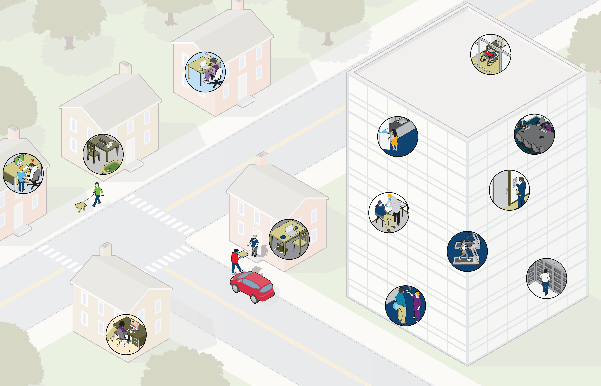

L’avenir du travail :
une nouvelle vision pour le milieu de travail
De même, les attentes des employés ont changé. D’après un sondage, les employés qui reçoivent régulièrement des communications de leur employeur ont moins d’inquiétudes quant à leur sécurité d’emploi et font davantage confiance à leur employeur. Ces changements transforment le monde des affaires et, par conséquent, redéfinissent l’avenir du travail à long terme. Les entreprises doivent se préparer dès maintenant pour limiter les perturbations et atténuer les risques, et miser sur ces changements pour accroitre leur valeur, leur avantage concurrentiel et leur incidence sociale.
La pandémie de la COVID-19 a modifié nos façons de faire et notre lieu de travail. En moins d’un an, les organisations se sont réorientées pour répondre aux besoins de leurs employés et de leurs clients. Dans un sondage éclair mené plus tôt cette année, Aon a constaté que 84 % des entreprises explorent des modèles de travail autres que le travail à distance, notamment les semaines de travail de quatre jours et les horaires flexibles.
Choisissez les zones en surbrillance pour en savoir plus

Les entreprises peuvent réutiliser les bureaux sur leurs plans d’étages en tant qu’espaces individuels en aménageant des plus petites salles fermées, adaptées à notre nouvelle réalité, plutôt que des espaces de travail à aire ouverte, afin de limiter autant que possible les préoccupations en matière de santé. Elles doivent aussi songer à réorganiser les cuisines et les toilettes pour tenir compte des mesures de sécurité et du niveau de confiance des locataires.
Immobilier

Retour en haut
De plus, le retour au bureau entraînera une forte demande des nouvelles technologies dans le secteur immobilier, comme l’enregistrement sans contact dans les immeubles et l’automatisation des surfaces fréquemment touchées. Les gestionnaires d’immeubles doivent commencer à examiner les investissements qu’ils devront faire pour devenir plus concurrentiels à cet égard.
Immobilier
Les avantages du travail à distance, comme l’élimination des déplacements quotidiens qui peuvent se compter en heures et la hausse de la productivité des personnes qui travaillent à la maison, entraînent également des conséquences inattendues. Les entreprises doivent décloisonner leurs activités afin de permettre aux gestionnaires de surveiller les employés pour s’assurer qu’ils ne sont pas submergés par le volume de projets et qu’ils sont encouragés à prendre des pauses adéquates.
Mieux-être
Il est recommandé que les employeurs mettent en place un programme de vérification et de dépistage efficace. Les mesures peuvent comprendre des vérifications de température, des tests de dépistage de la COVID-19, des recherches des contacts et des attestations de la part des employés.
Santé et Sécurité
Comme plus de 50 % des organisations utilisent déjà des outils de recrutement et d’intégration virtuels
(en anglais),
la façon dont les entreprises attirent, acquièrent et fidélisent les talents évolue. Dans ce nouvel environnement, il faut également faire preuve d’innovation et de souplesse dans la gestion du rendement au moment où les employés s’adaptent aux changements et concilient leurs engagements.
Talent
Mieux-être
Les entreprises doivent suivre l’évolution des normes de TI établies par des experts, comme l’Organisation internationale de normalisation (ISO), afin de s’assurer que leur équipement et leurs approches sont conformes aux dernières lignes directrices. L’ISO révise généralement les normes dans un domaine donné tous les cinq ans. En 2017, par exemple, elle a publié des principes directeurs et un cadre sur le domaine de l’économie du partage.
TECHNOLOGIES
DE L’INFORMATION (TI)
Les entreprises doivent envisager d’élaborer une approche axée sur les données dans le cadre de leurs stratégies liées aux talents afin de déterminer ce qui fonctionne et ce qui ne fonctionne pas. Les employeurs, alors qu’ils effectuent de nouveaux investissements dans les talents, doivent trouver des moyens
de mesurer le rendement de leurs investissements et la valeur qu’ils procurent aux employés, et des façons de suivre l’attrition et le roulement du personnel afin de renforcer l’agilité et la résilience.
Talent
Fournir un accès à des technologies qui peuvent aider les employés à comprendre leur bien-être financier
Organiser des séances
en ligne ou par l’intermédiaire de Webex sur le bien-être financier dans le cadre des interactions sociales
Mettre une plateforme
de rabais et d’offres à la disposition des employés
Il est primordial que les entreprises qui encouragent le retour au bureau assurent la sécurité et la santé de leurs employés. De nombreux employeurs choisissent notamment de modifier leurs politiques en matière de congés de maladie payés ou d’absences. Le développement et la distribution des vaccins influeront également sur les approches des entreprises.
Santé et Sécurité
Il est recommandé que les entreprises adoptent une approche de mieux-être efficace sur tous les plans : émotionnel, financier et physique, ainsi qu’en matière d’inclusion et de pratiques de travail. Les employeurs peuvent adopter un certain nombre d’approches concrètes (en anglais) pour soutenir leurs employés :
Bien-être financier :
En raison du nombre accru de gens qui travaillent à distance, les immeubles à usage commercial et mixte sont réaffectés et les entreprises qui détiennent des baux à long terme envisagent de les renégocier. Les espaces vacants d’immeubles de bureaux sont utilisés comme entrepôts ou centres de distribution ou réaffectés à des initiatives de santé et de mieux-être.
Immobilier
La recherche des contacts s’est d’ailleurs avérée très prometteuse pour réduire la propagation du virus. Dans certaines populations, elle peut réduire l’infectivité
de 85 %. L’un des plus grands défis auquel les entreprises seront confrontées est de trouver le juste équilibre entre la protection de leurs employés et leur droit à la vie privée.
Santé et Sécurité
1
1. Ferretti L, Wymant C, Kendall M et coll. Quantifying SARS-CoV-2 transmission suggests epidemic control with digital contact tracing. (En anglais seulement) Science. 2020
Mieux-être
Fournir un accès à des technologies qui peuvent renforcer la santé émotionnelle des employés
Mobiliser le réseau de secours en santé mentale de l’entreprise pour favoriser la santé, le bien-être et la résilience
Offrir l’accès à des services de consultation et de deuil au cas où les employés auraient besoin de soutien supplémentaire
Offrir des services de soutien supplémentaires ciblés aux employés, comme du soutien aux parents ou des services d’orientation professionnelle
Il est recommandé que les entreprises adoptent une approche de mieux-être efficace sur tous les plans : émotionnel, financier et physique, ainsi qu’en matière d’inclusion et de pratiques de travail. Les employeurs peuvent adopter un certain nombre d’approches concrètes (en anglais) pour soutenir leurs employés :
Bien-être émotionnel :
Mieux-être
Proposer aux employés des séances d’entraînement en ligne ou des défis santé à l’échelle de l’entreprise
Fournir aux employés un accès à des outils numériques, comme une aide au sommeil ou un entraîneur personnel virtuel, ainsi qu’à des applications de physiothérapie
Faire appel à un fournisseur de soins de santé au travail pour appuyer les évaluations de l’ergonomie des postes de travail pour les employés qui travaillent
à domicile
Offrir aux employés des rabais sur l’abonnement
à des services de paniers d’aliments sains
Il est recommandé que les entreprises adoptent une approche de mieux-être efficace sur tous les plans : émotionnel, financier et physique, ainsi qu’en matière d’inclusion et de pratiques de travail. Les employeurs peuvent adopter un certain nombre d’approches concrètes (en anglais) pour soutenir leurs employés :
Bien-être physique :
